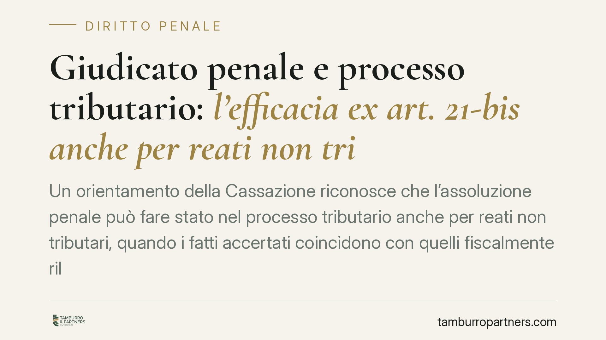

Giudicato penale e processo tributario: l'efficacia ex art. 21-bis anche per reati non tributari
Un orientamento della Cassazione riconosce che l'assoluzione penale può fare stato nel processo tributario anche per reati non tributari, quando i fatti accertati coincidono con quelli fiscalmente rilevanti. L'efficacia opera in entrambe le direzioni: può giovare al contribuente ma, in prospettiva, anche rafforzare la posizione dell'Amministrazione. Un tema che ridisegna i rapporti tra i due giudizi.

Il contesto
Per decenni penale e tributario hanno viaggiato su binari separati. Il principio del cosiddetto "doppio binario" imponeva che il processo tributario si svolgesse in autonomia rispetto a quello penale: il giudice fiscale poteva valutare liberamente le prove, senza essere vincolato dall'esito penale, e viceversa. Questa impermeabilità nasceva anche da una differenza strutturale tra i due sistemi probatori.
Nel processo penale la condanna richiede la prova "oltre ogni ragionevole dubbio" (art. 533 c.p.p.). Nel processo tributario, invece, l'accertamento può fondarsi su presunzioni: elementi indiziari che, se gravi, precisi e concordanti, spostano l'onere della prova sul contribuente. Due standard diversi che, applicati agli stessi fatti, potevano condurre a esiti opposti.
L'inquadramento normativo
Il quadro è cambiato con l'introduzione dell'art. 21-bis del d.lgs. 74/2000, inserito dal d.lgs. 87/2024. La norma attribuisce efficacia di giudicato, nel processo tributario, alla sentenza penale irrevocabile di assoluzione pronunciata con formula piena.
È un punto da chiarire con precisione. Fanno stato le due formule assolutorie di merito: "il fatto non sussiste" e "l'imputato non ha commesso il fatto". Entrambe accertano l'insussistenza di un elemento materiale in modo definitivo. Restano invece prive di questa efficacia le formule dubitative, ossia le assoluzioni pronunciate per insufficienza o contraddittorietà della prova ai sensi dell'art. 530, comma 2, c.p.p.: qui non c'è un accertamento positivo, ma solo la mancata prova della colpevolezza, e ciò non basta a vincolare il giudice tributario.
La questione interpretativa più delicata riguarda l'estensione. Il testo è stato pensato principalmente per i reati tributari. Un orientamento della Cassazione ha però ritenuto che l'efficacia del giudicato possa operare anche quando l'assoluzione riguarda reati non tributari, a condizione che i fatti materiali accertati in sede penale coincidano con quelli rilevanti ai fini fiscali. Va detto con chiarezza: si tratta di una lettura estensiva ancora da consolidare, che amplia sensibilmente la portata della norma e che andrà verificata nella sua tenuta nel tempo.
Il fondamento logico di questa impostazione è il principio di non contraddizione dell'ordinamento: se lo Stato, nel processo con le maggiori garanzie, ha accertato che un determinato fatto non è avvenuto o non è stato commesso da quel soggetto, non è coerente che lo stesso fatto venga poi ritenuto sussistente in sede fiscale.
Le implicazioni pratiche
L'aspetto da comprendere è che l'efficacia opera in modo bidirezionale, e non solo a favore del contribuente.
Sul versante favorevole: un'assoluzione piena su fatti che coincidono con quelli contestati nell'avviso di accertamento può essere fatta valere per neutralizzare la pretesa fiscale, quando quest'ultima si regga proprio su quegli stessi fatti materiali.
Sul versante opposto, però, la costruzione di un canale di comunicazione tra i due giudizi può in prospettiva rafforzare anche la posizione dell'Amministrazione. Quando l'accertamento penale conforta la ricostruzione fiscale, il contribuente vede ridursi i margini per una difesa autonoma in sede tributaria. Il coordinamento tra i giudizi, insomma, non è una garanzia a senso unico.
Resta ferma una distinzione essenziale: l'efficacia riguarda i fatti materiali accertati, non le valutazioni giuridiche. La qualificazione fiscale di un'operazione, l'esistenza di una presunzione, la ricostruzione del reddito imponibile rimangono terreno del giudice tributario.
Cosa fare in concreto
- Verificate se l'assoluzione penale è stata pronunciata con formula piena ("il fatto non sussiste" o "l'imputato non lo ha commesso") o dubitativa: solo la prima produce effetti nel giudizio tributario.
- Confrontate con precisione i fatti materiali accertati in sede penale con quelli posti a fondamento dell'avviso di accertamento: l'efficacia scatta solo in caso di coincidenza.
- Producete la sentenza penale irrevocabile, corredata dell'attestazione di passaggio in giudicato, nel fascicolo tributario.
- Coordinate fin dall'inizio la strategia penale e quella tributaria: scelte processuali in un giudizio possono condizionare l'altro.
- Se l'accertamento penale è potenzialmente sfavorevole, valutate con attenzione le conseguenze fiscali prima di definire la linea difensiva penale.
Consigliamo di trattare i due procedimenti come parti di un'unica strategia, evitando decisioni prese in isolamento in uno dei due ambiti.
Ogni condominio ha una storia a sé.
Se gestisci un'amministrazione e vuoi un confronto su una specifica questione condominiale, scrivi allo studio. Ti rispondiamo entro un giorno lavorativo.